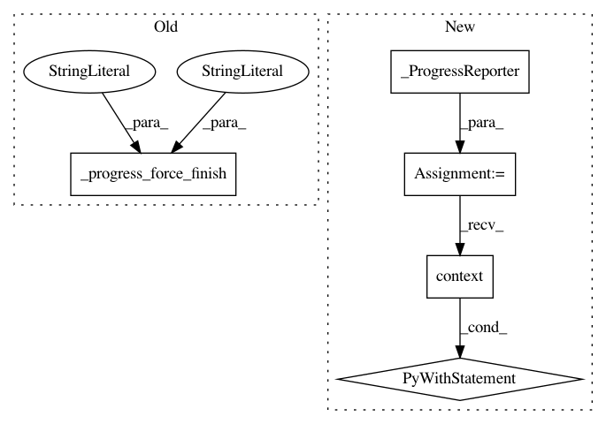

7ca3d9c8a30e60552589f179d108bc2a0ab2e4cd,pyemma/thermo/estimators/MBAR_estimator.py,MBAR,_estimate,#MBAR#Any#,106
Before Change
self.loglikelihoods = _np.nan * self.increments
except TypeError:
self.loglikelihoods = None
self._progress_force_finish(stage="MBAR", description="MBAR")
// get stationary models
models = [_StationaryModel(
f=self.biased_conf_energies_full[K, self.active_set],
After Change
mbar = _mbar_direct
else:
mbar = _mbar
pg = _ProgressReporter()
with pg.context():
self.therm_energies, self.unbiased_conf_energies_full, self.biased_conf_energies_full, \
self.increments = mbar.estimate(
self.state_counts_full.sum(axis=1), btrajs, dtrajs_full,
maxiter=self.maxiter, maxerr=self.maxerr,
save_convergence_info=self.save_convergence_info,
callback=_ConvergenceProgressIndicatorCallBack(
pg, "MBAR", self.maxiter, self.maxerr),
n_conf_states=self.nstates_full)
try:
self.loglikelihoods = _np.nan * self.increments
except TypeError:
self.loglikelihoods = None
In pattern: SUPERPATTERN
Frequency: 4
Non-data size: 5
Instances
Project Name: markovmodel/PyEMMA
Commit Name: 7ca3d9c8a30e60552589f179d108bc2a0ab2e4cd
Time: 2018-01-08
Author: m.scherer@fu-berlin.de
File Name: pyemma/thermo/estimators/MBAR_estimator.py
Class Name: MBAR
Method Name: _estimate
Project Name: markovmodel/PyEMMA
Commit Name: 7ca3d9c8a30e60552589f179d108bc2a0ab2e4cd
Time: 2018-01-08
Author: m.scherer@fu-berlin.de
File Name: pyemma/thermo/estimators/DTRAM_estimator.py
Class Name: DTRAM
Method Name: _estimate
Project Name: markovmodel/PyEMMA
Commit Name: 7ca3d9c8a30e60552589f179d108bc2a0ab2e4cd
Time: 2018-01-08
Author: m.scherer@fu-berlin.de
File Name: pyemma/thermo/estimators/WHAM_estimator.py
Class Name: WHAM
Method Name: _estimate
Project Name: markovmodel/PyEMMA
Commit Name: 7ca3d9c8a30e60552589f179d108bc2a0ab2e4cd
Time: 2018-01-08
Author: m.scherer@fu-berlin.de
File Name: pyemma/thermo/estimators/TRAM_estimator.py
Class Name: TRAM
Method Name: _estimate